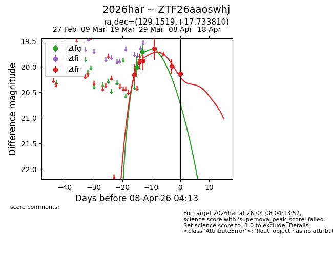
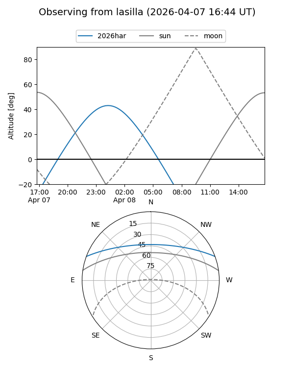
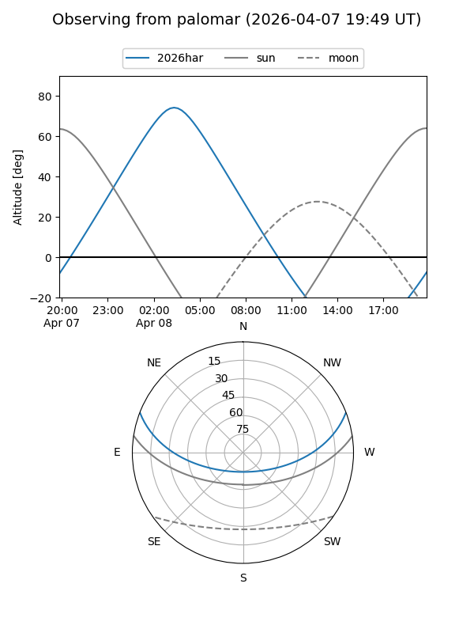
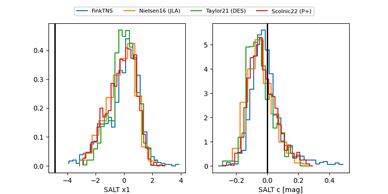

2026har
Target 2026har at 2026-04-08 04:18
Aliases and brokers:
FINK: link
Lasair: link
ALeRCE: link
TNS: link
YSE: link
alt names
ZTF26aaoswhj (ztf,fink_ztf)
2026har (tns,yse)
Coordinates:
equatorial (ra, dec) = 129.1519,+17.73381
equatorial (HMS+DMS) = 08:36:36.47,+17:44:01.72
galactic (l, b) = (207.6661,+30.95608)
Flags:
Photometry:
last ztfg=19.71, ztfr=20.14
2 ztfg, 6 ztfr detections
Lightcurve

Visibility


Additional plots
